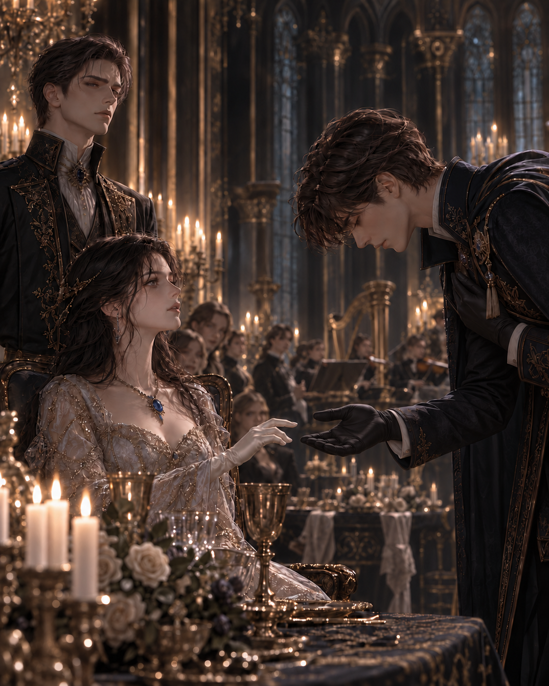

저녁이 되자 대전은 아무 일도 없었다는 듯 다시 빛났다.
오전의 알현 내내 홀리스 베인의 얼굴을 완성하지 못했던 천장의 거울들은 말끔히 닦여 있었고, 수백 개의 촛불은 은제 촛대 위에서 고요하게 타올랐다.
바닥에는 새로 밀랍을 입혔다.
식탁 위의 잔들은 모두 같은 각도로 놓였고, 식탁 위의 잔들은 모두 같은 각도로 놓였다. 은제 등잔 사이에는 늦가을에 거둔 검붉은 포도송이가 놓여 있었다.
아이리스는 아버지의 오른편 아래쪽에 앉아 있었다.
드레스는 아침과 조금도 달라지지 않았다.
쇄골 아래에는 여전히 사파이어가 놓여 있었다.
메이지가 알아보았던 붉은 자국은 분으로 얇게 가려져 있었다. 목걸이의 금속이 그 위를 스칠 때마다 피부가 따끔거렸지만, 아이리스는 고개를 움직이지 않았다.
그녀의 오른편에는 커런이 앉았고, 맞은편에는 변경의 사절단이 자리했다.
홀리스의 자리는 왕실과 지나치게 가깝지도, 외면했다는 인상을 줄 만큼 멀지도 않았다. 그 위치를 정하기 위해 의전관들이 한 시간이나 의논했다는 말을 아이리스는 들었다.
홀리스는 그 노력을 모르는 사람처럼 편안해 보였다.
궁정 사람들은 그가 고기를 어떻게 자르는지 지켜보고 있었다.
칼을 어느 손에 드는지. 잔을 입술에 가져가기 전 냅킨을 사용하는지. 뼈가 붙은 고기를 손으로 집어 들지는 않는지.
그들은 홀리스가 단 한 번이라도 틀리기를 기다렸다.
오전에는 거울이 답을 주지 않았지만, 식탁의 예법이라면 더 분명한 판정을 내려줄 수 있으리라 믿는 눈치였다.
그러나 홀리스는 처음 놓인 식기부터 마지막에 사용해야 할 포크까지 정확히 알고 있었다.
음식을 자르고 잔을 드는 동작에도 흐트러짐이 없었다. 상대가 음식을 삼킬 때까지 기다렸다가 말을 잇는 모습은 너무 자연스러워 배운 흔적조차 보이지 않았다.
맞은편에 앉은 재무대신이 참지 못하고 입을 열었다.
“변경에서도 이런 식기를 사용합니까?”
정중한 질문처럼 들렸지만 뜻은 분명했다.
홀리스가 나이프를 내려놓았다.
“겨울에는 자주 사용하지 않습니다.”
재무대신의 입가에 만족스러운 기색이 스쳤다.
“역시 그렇겠지요.”
“추위가 심해지면 금속이 피부에 달라붙으니까요.”
홀리스가 잔을 들어 올렸다.
“손가락을 식탁에 남겨두고 싶지 않다면 나무 손잡이를 쓰는 편이 현명합니다.”
주변에 앉은 몇몇 사람이 웃음을 참았다.
재무대신은 자신이 조롱받았는지 확신하지 못한 표정이었다.
“불편한 곳에서 사는군요.”
“불편한 것을 굳이 다른 이름으로 바꾸어 부르지 않는 곳이지요.”
홀리스가 온화하게 대답했다.
아이리스의 손이 잔 위에서 아주 조금 멈췄다.
불편함.
그녀에게는 익숙하면서도 낯선 말이었다.
조이는 드레스와 얕아지는 호흡, 피부를 쓸고 지나가는 차가운 금속까지.
어젯밤 메이지가 목을 살펴보았을 때에도 아이리스의 입에서 먼저 나온 말은 괜찮다는 것이었다.
홀리스의 시선이 잔 가장자리 너머로 잠시 아이리스에게 닿았다.
우연처럼 짧은 시선이었다. 그녀의 손이 멈춘 것을 보았는지는 알 수 없었다.
그는 아무것도 덧붙이지 않은 채 다시 나이프를 들었다.
잠시 후 서부 영지의 백작이 대화에 끼어들었다.
“변경에서는 중앙의 혼인법에 예외를 요구한다고 들었습니다.”
“혼인에 관한 한, 따르지 않는 조항이 여럿 있습니다.”
“왕국의 법보다 오래된 관습이라도 있는 겁니까?”
“대개는 그렇습니다.”
“오래되었다고 해서 옳은 것은 아니지요.”
백작이 말했다.
홀리스의 입술 끝이 아주 조금 올라갔다.
“그 말씀에는 동의합니다.”
반박을 기다리던 백작은 뜻밖의 동의에 잠시 말을 잃었다.
홀리스가 고개를 기울였다.
“그렇다면 왕국에도 오래되었다는 이유만으로 남아 있는 것이 꽤 많겠군요.”
이번에는 웃음이 조금 더 분명하게 퍼졌다.
그러나 홀리스는 예법을 어기지 않았다.
목소리를 높이지도 않았고, 상대의 말을 끊지도 않았다.
그는 질문에 답했을 뿐이었다.
오전의 대전에서처럼 천장의 거울은 여전히 그의 얼굴 하나를 오래 붙잡지 못했다.
그가 재무대신에게 대답할 때는 느긋한 귀족처럼 보였고, 서부 백작을 향해 미소 지을 때는 상대가 스스로 함정에 들어오기를 기다리는 사람처럼 비쳤다. 그러나 시종이 잔을 채우기 쉽도록 그가 몸을 조금 비켜주었을 때에는 거울 속 얼굴도 뜻밖의 온순함을 띠었다.
시종이 물러난 뒤에도 몇몇은 여전히 천장을 보고 있었다.
연회의 마지막 요리가 치워질 즈음, 대전 한쪽에 자리한 현악단이 조율을 시작했다. 첫 번째 바이올린이 길고 가느다란 음을 냈다.
대화가 조금씩 잦아들었다.
오늘의 첫 왈츠는 아이리스와 커런의 몫이었다.
왕실의 후계자와 그녀의 정혼자가 함께 춤을 추는 모습은 사절단에게 왕국의 안정과 미래를 보여주는 가장 우아한 방식이라고 의전관은 설명했다.
커런이 자리에서 일어났다.
그는 아이리스를 향해 손을 내밀려는 순간, 맞은편에서 의자가 밀리는 소리가 났다.
홀리스가 일어나고 있었다.
그는 곧장 아이리스에게 오지 않았다.
먼저 에드먼드 왕과 세라핀 왕비에게 예를 올린 뒤, 오른손을 가슴에 얹었다.
“변경의 베인가를 대표하여, 애시워스 왕가가 베풀어준 환대에 경의를 표하고자 합니다.”
그가 말했다.
“왕국의 후계자께 첫 번째 영예를 청해도 되겠습니까?”
나이 지긋한 귀족 몇이 그 말에 고개를 들었다.
국경령의 수장이나 동맹 가문의 계승자가 왕실의 환대에 답할 때 올리던 청이었다. 정해진 첫 왈츠에 앞서, 짧은 전주곡 한 곡을 후계자와 함께 추는 예우.
아이리스조차 교본으로만 배운 방식이었다.
커런이 아이리스의 옆에서 한 걸음 앞으로 나섰다.
“첫 춤은 이미 정해져 있습니다.”
홀리스가 그를 바라보았다.
“알고 있습니다.”
그는 조금도 물러서지 않은 채 고개를 숙였다.
“그러므로 첫 춤이 아니라, 첫 번째 영예를 청했습니다.”
커런이 반박하려다 입을 다물었다.
홀리스의 말에는 틈이 없었다.
그가 예법을 잘못 이해했다고 지적할 수도 없었고, 거절한다면 변경 사절단이 바친 경의를 왕실이 되돌려 보낸 모양이 되었다.
에드먼드는 홀리스에게 답하기 전에 대전 안을 한 번 둘러보았다.
“받아들이거라.”
그가 아이리스에게 말했다.
커런의 턱이 굳었다.
아이리스는 그를 향해 아주 조금 고개를 돌렸다. 아침마다 연습해온, ‘염려하지 않으셔도 됩니다ʼ를 뜻하는 고요한 표정을 지었다.
커런은 그녀의 표정을 잠시 바라보다 물러섰다.
홀리스가 그녀 앞에 섰다.
그는 손을 내밀기 전에 먼저 허리를 숙였다. 고전 예법 그대로였다. 손바닥은 위로 향했고, 손가락은 지나치게 펴지도 구부리지도 않았다.
아이리스는 그 손을 바라보았다.
오전의 대전에서 자신이 대답하지 못했던 두 번의 호흡이 떠올랐다.
“영광을 허락해 주시겠습니까, 전하?”

홀리스가 물었다.
예법으로는 거절할 수 없는 청이었다. 현악단은 그녀가 손을 올리기를 기다리고 있었다.
아이리스는 손을 올렸다.
홀리스의 손가락이 그녀의 손을 받쳤다.
체온은 예상보다 따뜻했다.